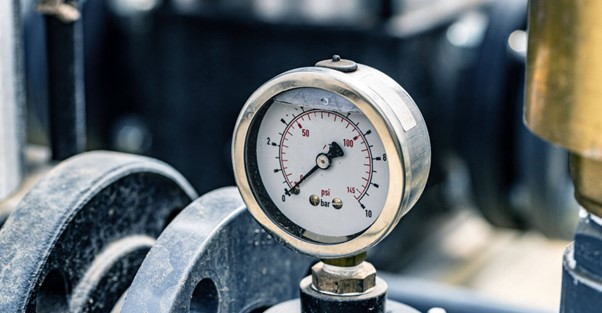
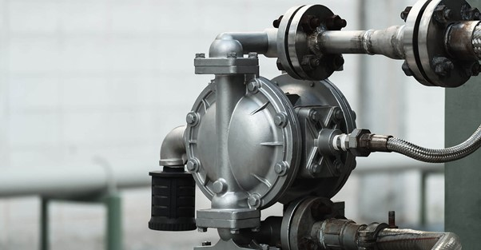
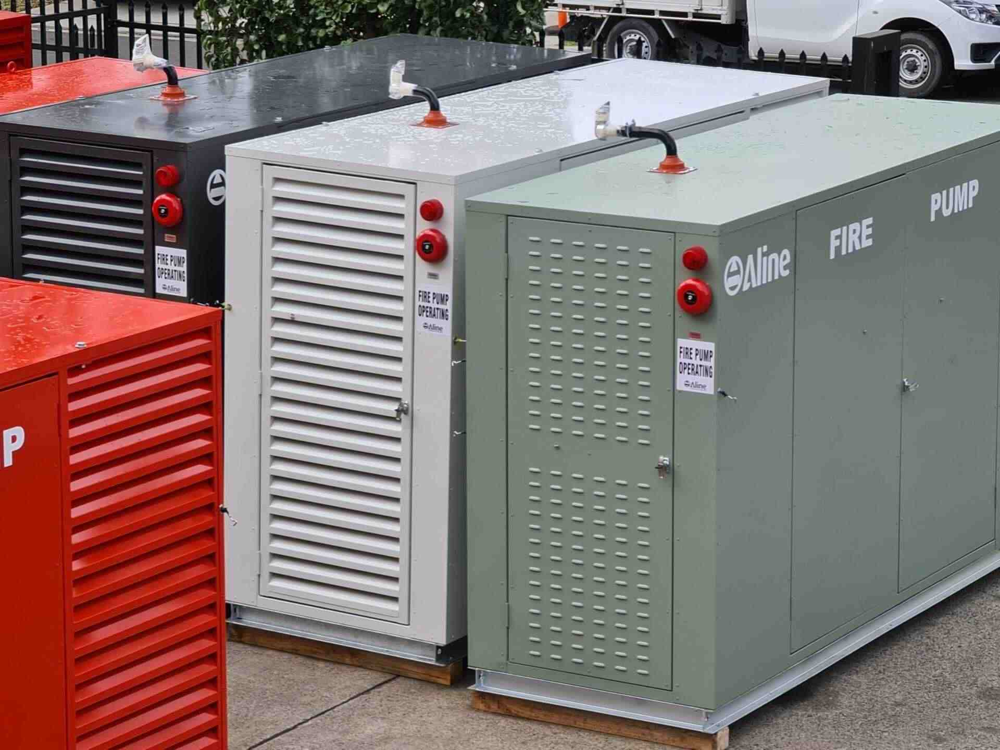
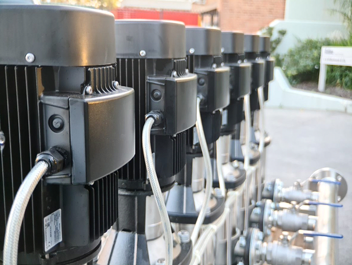
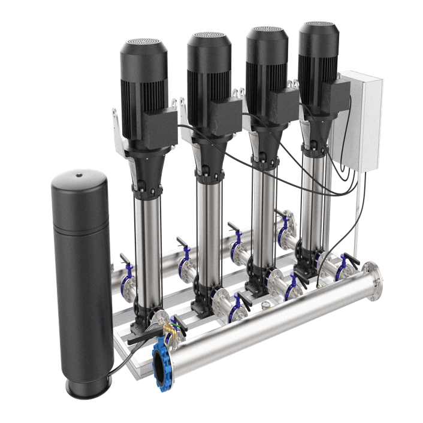
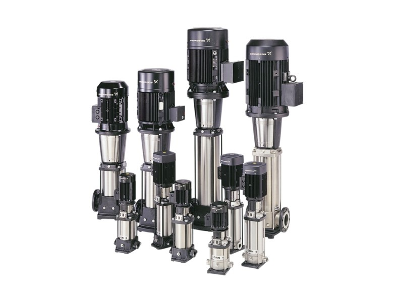
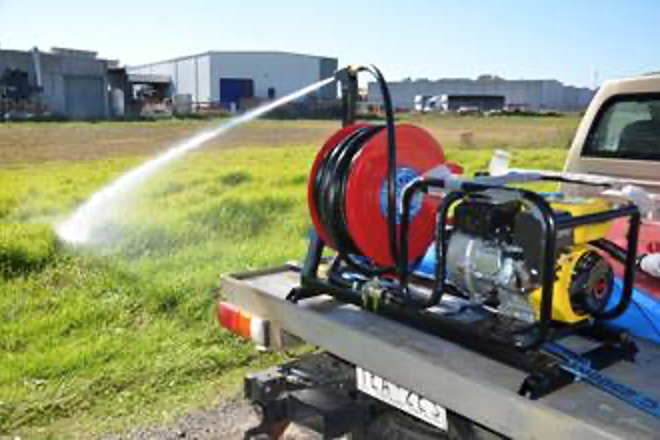

A Pump for every Application
Aline supplies pump systems for builders, plumbers and fire protection contractors across a range of applications. This guide outlines the…
Read article7 articles

Aline supplies pump systems for builders, plumbers and fire protection contractors across a range of applications. This guide outlines the…
Read article
A high pressure water pump is designed to generate strong, focused water force – ideal for tasks like cleaning, firefighting, irrigation, and…
Read article
A water pressure booster pump increases water pressure and flow in buildings where mains supply is insufficient. These pumps draw water from a…
Read article
A booster pump increases low water pressure by drawing water from a source (like a tank or main line), pressurising it using a motor and…
Read article
Variable speed pumps adjust their output as demand changes. In a suitable system, this can help maintain pressure while reducing unnecessary…
Read article
Grundfos manufactures pumps for water supply, heating, wastewater and other applications. This guide looks at the range and the information…
Read article
Flow rate describes how much water a pump moves. Pressure describes the force available to move it through the system. Understanding both helps…
Read article